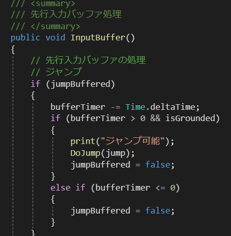
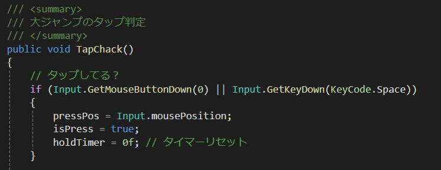
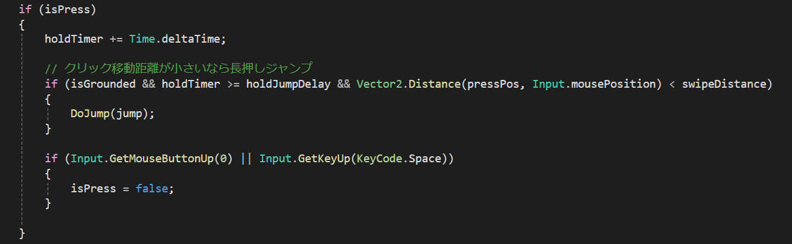

ジャンプ入力を少し早く行っても反応するようにするため、 入力を一定時間保持し、着地した瞬間にジャンプ処理を実行する仕組みを実装しました。
これにより、プレイヤーが操作しやすく、スピード感のあるプレイが可能になります。
デバック時に行ったためマウスのクリックを使用しています。
空中にいる時にタップするとジャンプを行う関数が一定時間有効になります。その時間内に地面に触れるとジャンプを行います。
先行入力によってジャンプしたらジャンプ可能というデバックが発動しています。


通常ジャンプとは別に、タップ時に上にスワイプすることにより高くジャンプできる大ジャンプを実装しました。
プレイヤーは状況に応じてジャンプを使い分ける必要があり、 ルート選択の幅が広がります。
デバック時に行ったためマウスのクリックを使用しています。
最初にタップした位置から最後に指が離された位置を計算してそれが上方向ならスワイプしてると判断して大ジャンプの処理を実行させています。
これによりプレイヤーがもし横や下方向にスワイプした際は通常のジャンプになるようになっています。